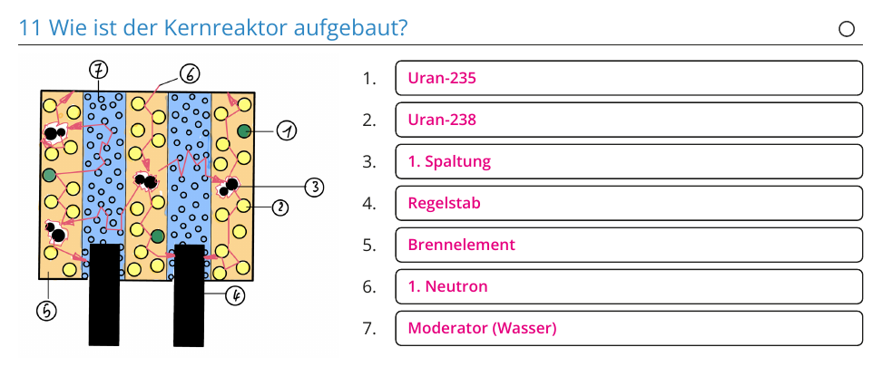
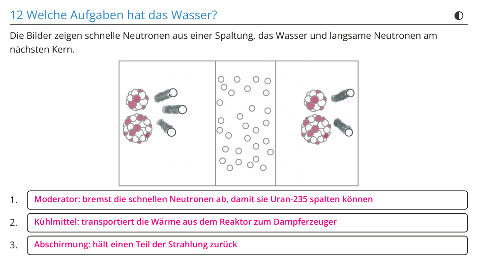
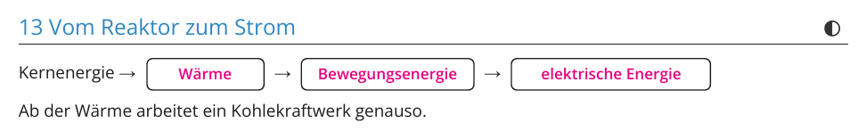
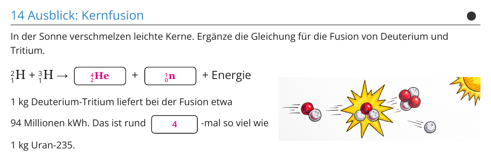

Kein neuer Druck: Die Schüler arbeiten im Begleitheft weiter.
Folien und Lösungen: nicht drucken.
Material
Demo (für dich)
Material
Anzahl
Hinweis
nicht nötig
Schülerversuch (pro Gruppe)
Material
Anzahl
Hinweis
nicht nötig
Die Stunde
1 · Reaktoraufbau
2 · Vom Reaktor zum Strom
3 · Kernfusion
4 · Alltag
1
Reaktoraufbau Heft 11 und 12, Kreisläufe im Labor.
2
Vom Reaktor zum Strom Folie Kraftwerke, Heft 13.
3
Kernfusion Folie, Heft 14, Fusion im Labor.
4
Alltag Wo man an der Fusion forscht.
Folie 1 · Schülerblatt mit Lösung
📄 Begleitheft weiter

Folie 2 · Schülerblatt mit Lösung

Folie 3
16. Kernkraftwerk und Kohlekraftwerk
Beide Kraftwerke erzeugen Strom über Wärme, Dampf, Turbine und Generator.
Verschieden ist nur der erste Schritt: Kernspaltung statt Verbrennung.
Folie 4 · Schülerblatt mit Lösung

Folie 5
17. Die Kernfusion
Bei der Fusion verschmelzen leichte Kerne zu einem schwereren.
Das ist die Energiequelle der Sonne. Auf der Erde gelingt sie bisher nur kurzzeitig,
weil enorme Temperaturen nötig sind.
Folie 6 · Schülerblatt mit Lösung

Folie 7
Wo man an der Fusion forscht
Ort
was es ist
was dort passiert
Sonne
Fusion seit 4,6 Milliarden Jahren
Wasserstoff wird zu Helium, etwa 15 Mio. °C im Inneren
Wendelstein 7-X, Greifswald
Forschungsanlage seit 2015
hält heißes Plasma mit Magnetfeldern fest
ITER, Frankreich
internationale Anlage im Bau
soll mehr Energie liefern, als sie zum Heizen braucht
NIF, USA
Laser-Versuch 2022
erstmals mehr Fusionsenergie als Laserenergie eingestrahlt
Frage: Warum gibt es trotzdem noch kein Fusionskraftwerk? Antwort:Das über 100 Mio. °C heiße Plasma muss lange genug eingeschlossen werden, und die Anlage muss dabei mehr Energie liefern, als sie verbraucht. Das gelingt bisher nur kurz im Versuch.
Kraftwerk
Druckwasserreaktor: Primärkreislauf unter etwa 150 bar, damit das Wasser bei rund 300 °C nicht siedet. Dampferzeuger trennt ihn vom Sekundärkreislauf.
Wirkungsgrad etwa 33 %. Zwei Drittel der Wärme gehen an Fluss und Luft, deshalb stehen Kraftwerke an Flüssen.
Ab dem Dampf gleicht das Kernkraftwerk einem Kohlekraftwerk. Unterschied: kein CO₂ im Betrieb, dafür radioaktiver Abfall.
Reaktorbild im Heft (Abschnitt 11) nach deiner Zuordnung: 1 Uran-235, 2 Uran-238, 3 1. Spaltung, 4 Regelstab, 5 Brennelement, 6 1. Neutron, 7 Moderator (Wasser).
Kernfusion
Deuterium gibt es im Meerwasser, Tritium muss aus Lithium erbrütet werden.
Die Sonne schafft Fusion bei 15 Mio. °C nur wegen des riesigen Drucks und der enormen Menge an Wasserstoff. Einzelne Reaktionen sind dort sehr selten.
Fusion erzeugt keinen langlebigen Abfall wie die Spaltung. Die Neutronen aktivieren aber die Wände der Anlage.
1 kg Deuterium-Tritium liefert etwa 94 Mio. kWh (17,6 MeV pro Reaktion), rund viermal so viel wie 1 kg Uran-235. Steht als Lücke in Abschnitt 14.
Ein Heft für W16 bis W18, gebaut nach deinem Tutory-Blatt „Kettenreaktion“ mit deinen Zeichnungen. Seiten 1 bis 4 als A3-Bogen doppelseitig kopieren, einmal in W16 austeilen. Lösung: Seiten 5 bis 8 des PDFs, abschnittsweise auch im Folien-Tab.